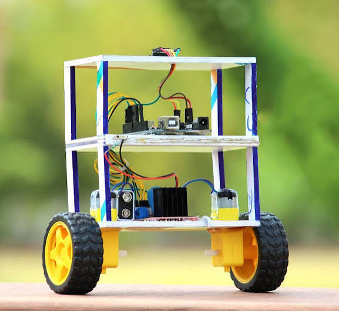

Teknoloji proje ödevim
Denge robotu, dengesini korumak için kullanılan
bir sistemdir. Sensörler ve motorlar
yardımıyla dik durmaya çalışır..

Projemiz
Bu projede denge robotunun nasıl çalıştığını öğrenmek istiyoruz.
Amacımız robotik sistemleri ve denge
kontrolünü tanımaktır.
Amacımız robotik sistemleri tanımaktır.
Proje sorumlusu: Ömer Faruk Pelenk
Mekanik tasarım: Ensar Nail
Yazılım ve elektronik:Kayra Ozdemir